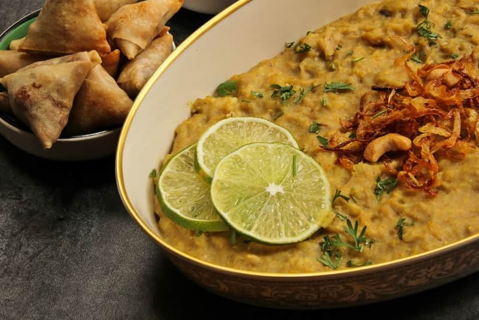
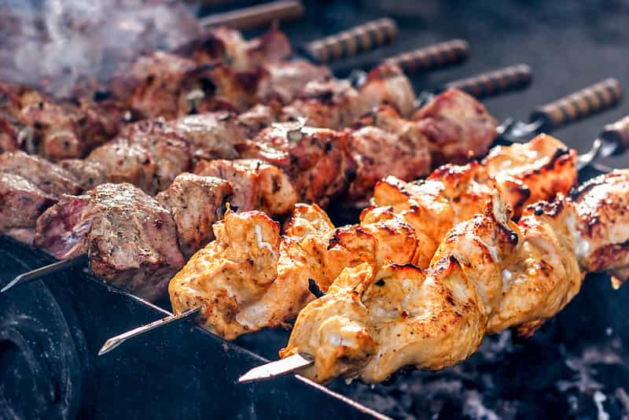

If you were to rank the cuisine of Hyderabad by popularity, the biryani of Hyderabad will be at the top of the charts without the least confusion in the matter. Most people would be ready to consume it at any hour of the day and its rich aromatic flavour and taste never fail to bring anyone back for a second helping! It is usually made with mutton, but chicken biryani is also a hot favourite. Hyderabad’s most popular Biryani outlet, Paradise, has special packaging available for people who carry huge quantities of it home, on a domestic flight.

Mostly made from mutton, nuts and spices and wheat, this slow-cooked dish is a hot favourite of people, without reference to religion. This dish provides special sustenance to people of Islamic faith who fast most stringently, refusing to even swallow their own saliva, for the 40 days leading up to the festival of Ramzan. Come Ramzan, everybody queues up for their fair share of this delicacy.

Kebabs are a very popular barbecued meat dish, originating from Middle Eastern cuisine. Extremely popular in Hyderabad, with huge queues forming outside Hyderabadi joints for a plate of succulent, smoky kebabs and mint chutney, the meat-dish is considered a non-vegetarian’s idea of paradise.
